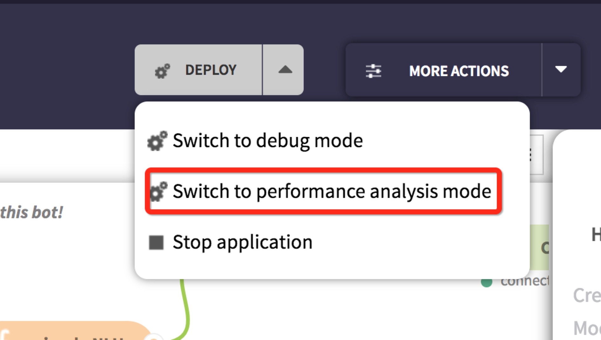
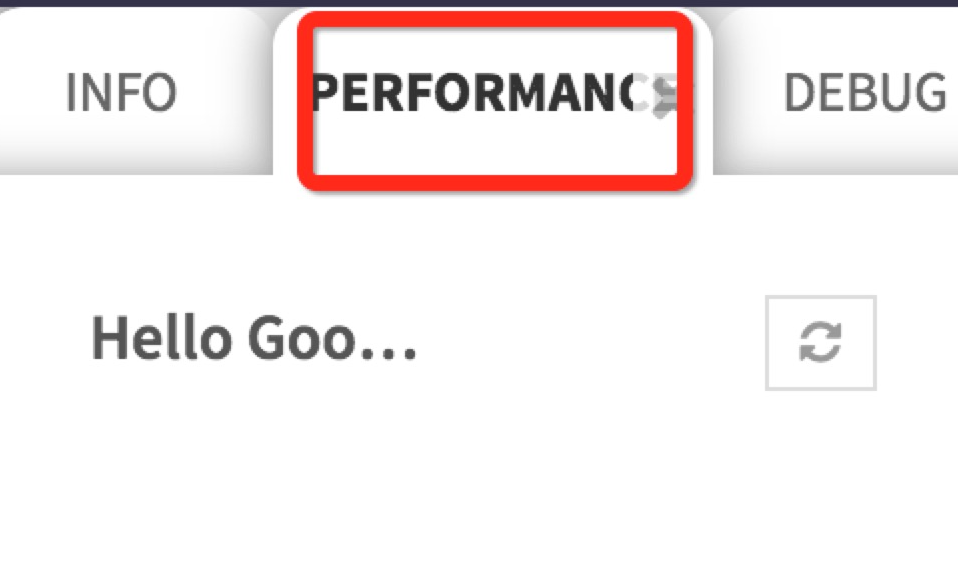

性能分析模式¶
介绍¶
在我们开发完一个flow之后，我们的flow可能会出现性能问题，这时候我们就需要开启flow的性能分析模式来追查具体是哪个node导致的flow执行过慢。
开启性能模式后，我们可以看到每一个node执行的次数，以及执行的平均时间。
下面我们以最简单的 Hello Goodbye! 的sample来进行介绍。
开启并使用性能分析模式¶
首先我们从samples里创建一个 Hello GoodBye! 的应用，并部署，让我们的应用跑起来。
然后我们点击deploy->Switch to performance analysis mode按钮，这时候我们的应用就会切换到性能分析模式。
屏幕的右侧面板会多出一个 PERFORMANCE 的选项卡，如下图所示：
此时应用就已经处于性能分析模式了，该flow的所有node的执行次数和执行时间都会被记录。